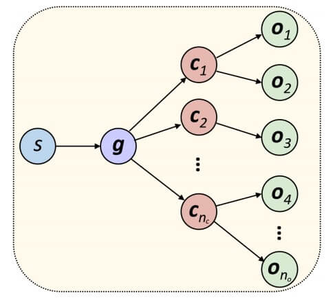
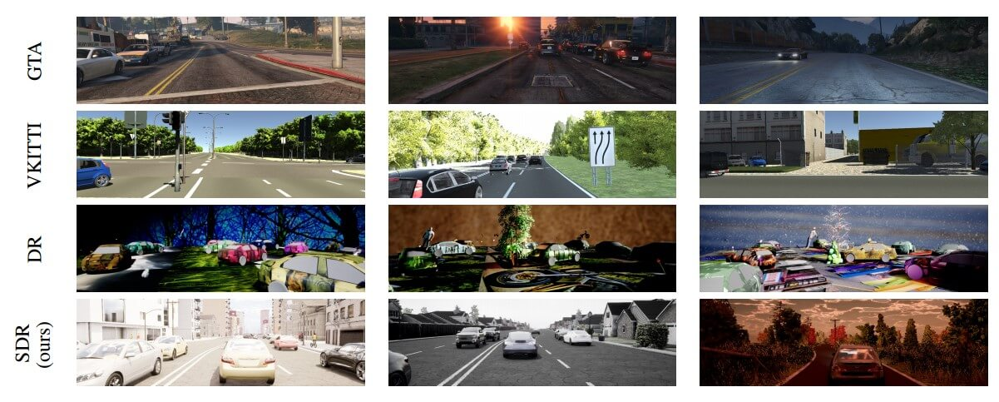
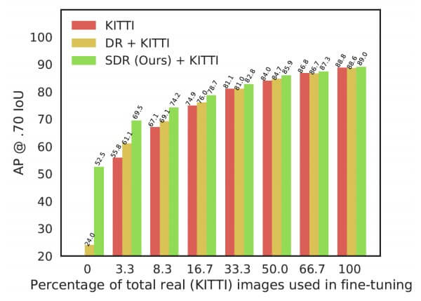
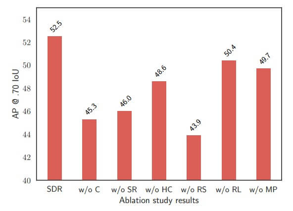

Paper-Structured Domain Randomization-Bridging the Reality Gap by Context-Aware Synthetic Data
目录
资源
全文
Abstract
提出了结构化域随机化（SDR），这是域随机化（DR）的一种变体，它考虑了场景的结构和上下文。与 DR 不同，DR 根据均匀的概率分布随机放置对象和干扰物，SDR 根据手头特定问题产生的概率分布随意放置对象和干扰物。
SDR 生成的图像使神经网络能够在检测过程中考虑对象周围的环境。
1. Introduction
合成数据是一个有吸引力的替代方案，因为数据注释基本上是免费的。最近，已经生成了许多用于训练深度网络的合成数据集。这些数据集要么需要精心设计的模拟环境，要么需要有注释的真实数据作为起点。为了缓解这些困难，领域随机化（DR）提出对输入进行随机化，以最大限度地减少对环境或先前真实数据的艺术设计的需要。最近的工作证明了 DR 在 KITTI 数据集中实现最先进的汽车 2D 边界盒检测的能力。
提出了结构化域随机化（SDR），它为域随机化（DR）添加了结构和上下文。我们提出了一种仅使用 SDR 生成的合成数据来训练用于对象检测的深度网络的方法，并且我们表明，该过程的结果不仅优于生成合成数据的其他方法，而且也优于来自不同领域的真实数据。
Tobin 等人引入了领域随机化（DR）的概念，其中避免了逼真的渲染，而有利于随机变化。他们的方法随机改变前景对象的纹理和颜色、背景图像、场景中的灯光数量、灯光的姿势、相机位置和前景对象。目标是通过生成具有足够变化的合成数据来缩小现实差距，使网络将真实世界的数据视为另一种变化。
我们之前在中的工作使用 DR 来训练汽车的物体探测器，该探测器在 KITTI 上进行了测试，类似于这里介绍的工作。在那项研究中，我们了解到，在变化量很大的情况下，DR 需要大量的数据来训练，通常网络很难学习正确的特征，而且缺乏上下文使 DR 无法检测到小型车辆。本文所述的研究旨在解决这些局限性。其他研究人员也发现上下文很重要。
3. Structured Domain Randomization (SDR)
结构化域随机化（SDR）是一种通用技术，用于按程序生成合成随机图像，以保留当前问题的结构或上下文。在我们的公式中，SDR 涉及三种类型的组件：
- 全局参数
- 一个或多个上下文样条曲线
- 沿样条曲线放置的对象。
生成特定图像 $I$ 和参数、样条曲线和对象的联合概率由

SDR 不同组成部分之间的概率关系。场景 ($s$) 确定全局参数 ($\mathbf{g}$)，全局参数控制放置对象 ($\mathbf{o}_j$) 的上下文样条曲线 ($\mathbf{c}_i$)。上下文样条线捕捉场景的结构。通过这些参数、样条曲线和对象渲染图像。
随机确定场景 $s$。在我们的实施中，大约有 20 种场景，如“农村 2 车道道路”、“带人行道的郊区 4 车道道路”或“带草地中央分隔带和人行道的城市 6 车道道路”。
一旦选择了场景，就确定全局参数 $\mathbf{g}$。其中包括由 $n_s=100$ 个控制点指定的样条曲线形状，在控制点的每个固定子集之后进行随机的右 / 左 / 直决策。每个右/左转弯都固定在 30 度，只有当道路已经朝相反的方向行驶时才允许（以避免急转弯）。其他全局参数包括太阳的方位角 / 仰角、一天中的时间、太阳的色温和强度、天空颜色、云密度 / 位置、相机偏航 / 俯仰 / FOV、每条车道的最大车辆数量等。全局参数还包括车道数、是否存在中间带、何时存在人行道等。
每个上下文样条曲线 $c_i$ 的参数由全局参数确定。$n_c$ 上下文样条曲线彼此相邻并共享其形状。每条车道有一条上下文样条线，中间带有一条，每条人行道有一条、每条排水沟有一条和每条边延伸有一条。这些样条曲线接收控制其外观的随机颜色和纹理，例如草的类型、沥青的黑暗度和混凝土的类型。这些花键上覆盖着各种各样的缺陷，如道路上的坑洞、裂缝和漏油。
$n_o$ 对象 $o_j$ 随机放置在上下文样条曲线上。我们将不同类型的对象与不同类型的上下文样条线相关联。车道样条线可容纳车辆，人行道可容纳行人和骑自行车的人，侧边延伸样条线可以容纳建筑物、房屋和路标，等等。
相比之下，对于 DR，生成图像 $I$ 的概率不取决于上下文。相反，对象被随机放置在具有来自图像数据集（如 COCO 或 ImageNet）的背景的场景中。DR 缺乏 SDR 中存在的结构，也就是说，它不具有对象对上下文的条件依赖性 $p(\mathbf{o}_j|\mathbf{c}_i)$。
我们的 SDR 实施包括 74 个汽车模型、13 个卡车模型、5 个自行车模型、41 个建筑模型、87 个房屋模型、24 个树木模型、20 个行人模型和 100 个路标模型。其他型号包括路灯、墙壁、围栏、消防栓、回收箱、电线杆、交通灯和杂物箱，每种都有少量（1-3）个。
对于 DR 数据，我们使用这些相同的模型作为干扰物，使用相同的汽车作为感兴趣的对象。

DR 生成随机对象放置、随机对象纹理、随机背景、随机干扰物和随机照明，但它缺乏适当的上下文和结构，导致图像极不真实。相反，SDR 使用上下文以逼真的方式放置对象，尊重上下文边界的几何结构，同时仍然随机化位置、纹理、照明、饱和度等。
4. Evaluation
尽管基于 GTA 和虚拟 KITTI 都能产生逼真的图像，但域随机化（DR）有意避免各种逼真的图像。结构化域随机化（SDR）在这两个极端之间取得了平衡，产生了在许多方面都真实的图像，但仍然表现出很大的多样性。
A. Comparative Study
使用 Faster-RCNN。
B. Domain Gap
C. SDR as an Initialization Strategy

D. Ablation Study
在本节中，我们介绍了个别 SDR 参数的影响。对于该实验，我们使用相同的 FasterRCNN 网络和在 ImageNet 上预训练的 Resnet V1 作为特征提取器，并使用与 Sec.IV-B 相同的验证集。我们之前的 DR 参数研究 表明，照明是最重要的参数。对于 SDR，我们发现其他参数（例如，背景、饱和度和对比度）更重要。

消融研究的细节如下。
$\mathbf C$： 场景中没有放置道路、人行道、树木和其他三维对象，而是使用了随机的二维背景图像。这一结果表明了语境的重要性。
$\mathbf{SR}$：图像不是从各种场景生成的，而是仅从农村（46.0 AP）、郊区（47.7 AP）或城市（51.9 AP）场景生成的。这一结果揭示了场景中多样性的重要性。
$\mathbf{HC}$：对于 SDR，对比度固定在正常的 150%；对于这个实验，对比度被设置为 100%。
$\mathbf{RS}$：去除了随机饱和。这种变化的影响最大，表明真实数据和合成数据之间的纹理差距的重要性。
$\mathbf{RL}$：照明固定在一天中的一个时间（大白天）。
$\mathbf{MP}$：车辆姿态总是固定在车道内，因此在检测到停放的车辆或小街上的车辆时会降低性能。
5. Conclusion
我们引入了结构化域随机化（SDR），它将结构强加给域随机化（DR）以提供上下文。例如，对于检测车辆，SDR 将车辆放置在道路上，从而使神经网络能够在训练期间学习它们之间的关系。通过实验，我们表明这比 DR 显著提高了性能。